The May Fairhome | zine | mayIt was the May Fair on Monday. We made some display boards to tell people about skateparks and then stood there for a few hours talking to people. We also did a little BMX display. The pictures are not particularly well timed I'm afraid. 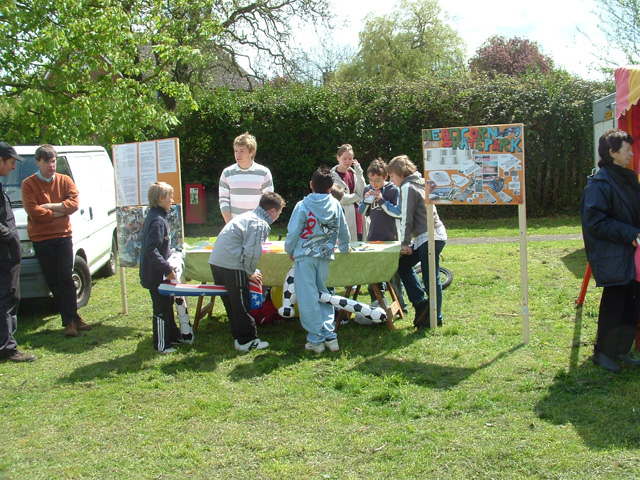 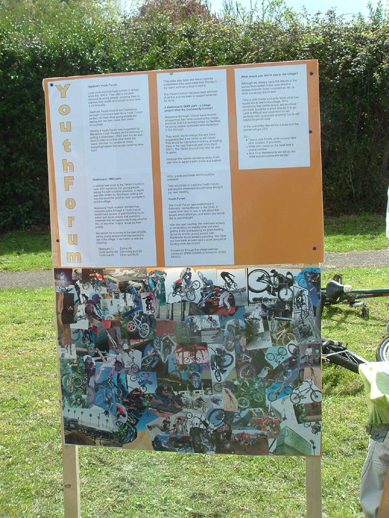 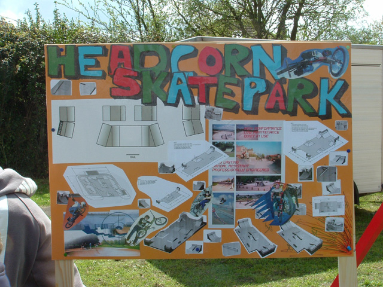 We used Gregorys and Jack's ramps, and a bunny hop thing that Gregory made. 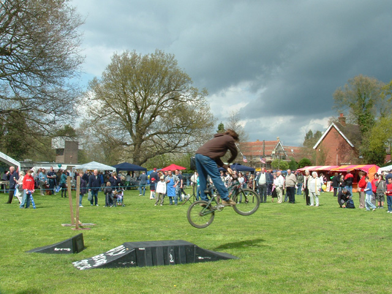 We tried to do some tricks but the run up was grass and the ramps were not big. 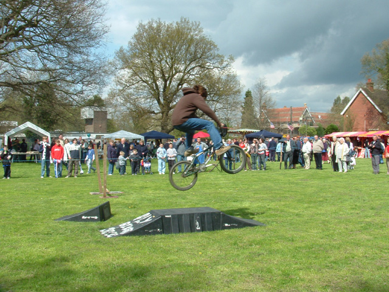 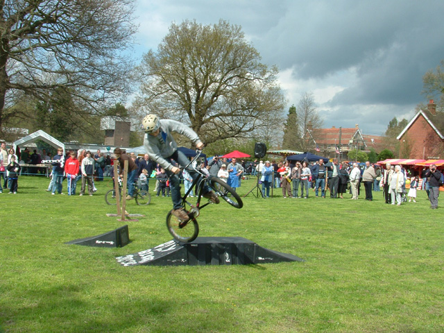 Greg 180 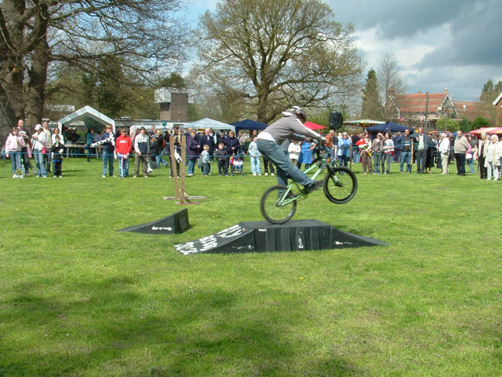 Jack Manual 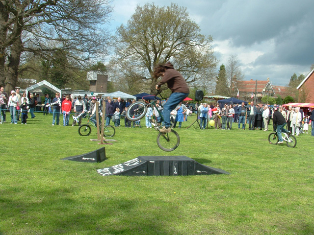 360? 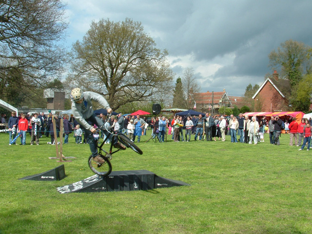 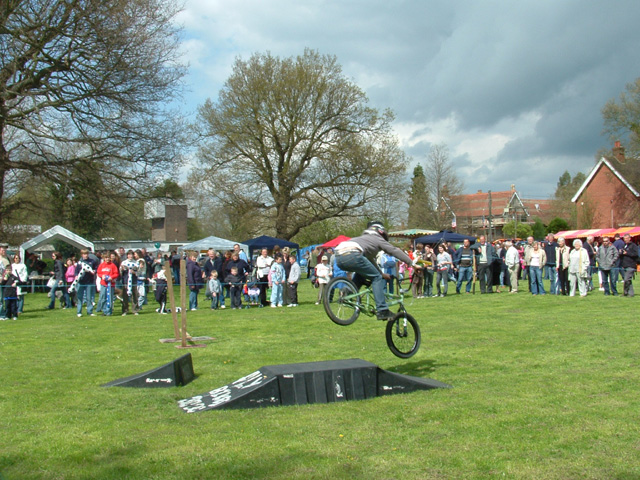 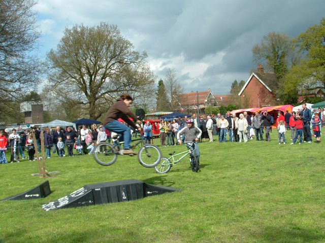 Transfer? 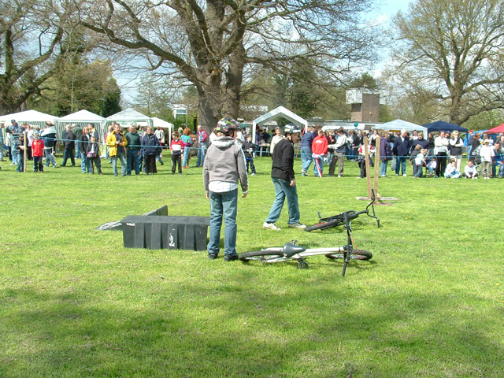 Rearrange ramps. Kevin (Gerg's dad) did some comentary, which I thought was hilarious. He did a good job. 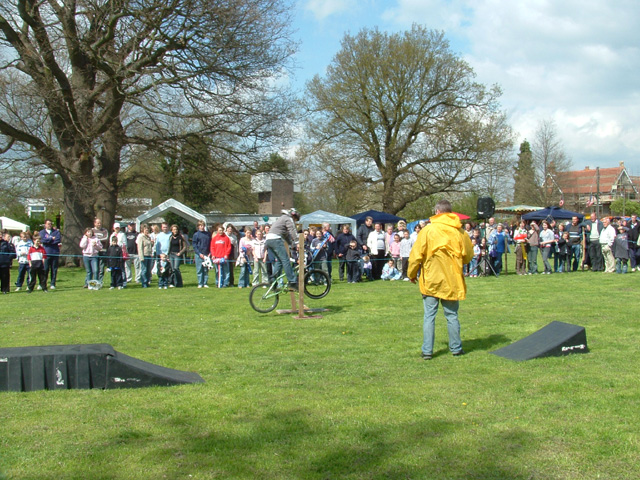 Jack Hop 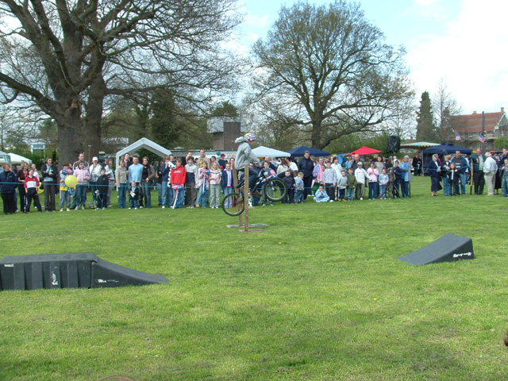 Greg Hop. This one might be knocked off, but Greg did hop pretty high. Much higher than I could hop when I was 10/11 (I couldn't) 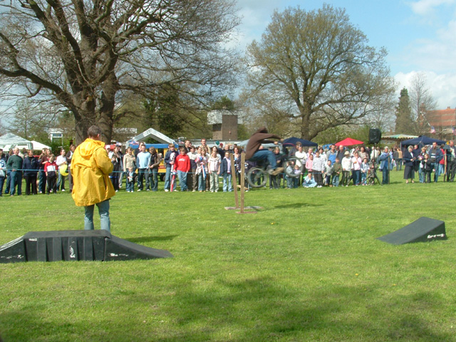 Me Hop 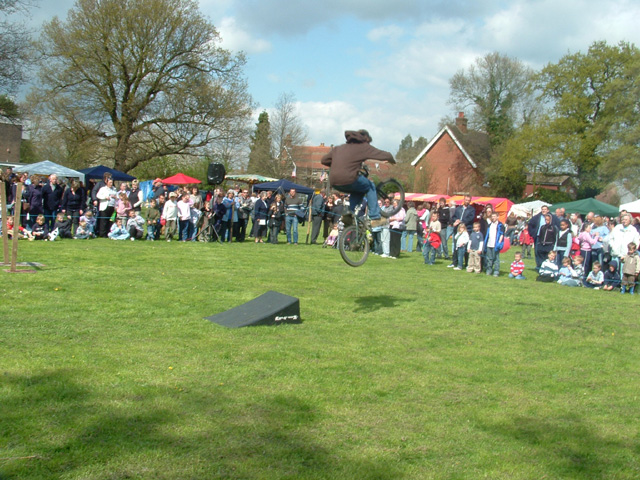 Tyre Grab 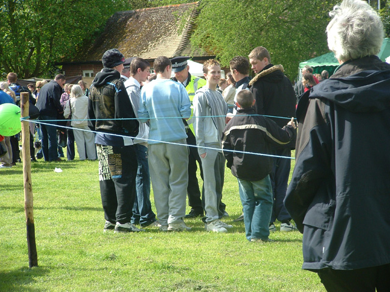 These prats (haha, good word) were spraying us with water pistols and throwing water bombs. The police told them off. They were weirdos - they joined in all the kiddies races - like an under 10s running race. They looked really happy when they won too. So thanks should go to Gregory for making the bunny hop thingy, to Greg, Joe Jack and Alex for helping with the display boards, To Kevin for his commentary and helping set stuff up, to everyone who rode, to James, who stayed on the stand all day even though he doesn't ride, to Becky for the photos and to Simon Bass for setting up the youth forum and nagging the council to give us a site for the skatepark. |